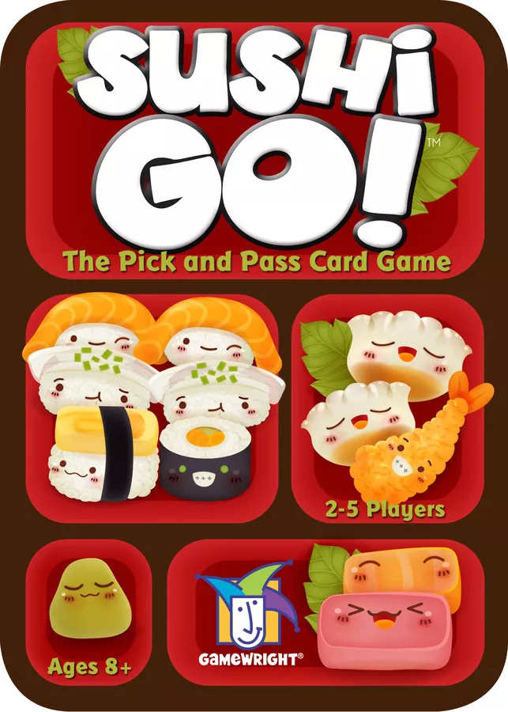

Board Game Review

Sushi Go!
I'm excited to share my thoughts on a delightful and appetizing game that has captured the hearts of players
everywhere: Sushi Go! Designed by Phil Walker-Harding and published by Gamewright, this quick and easy card
game invites players to enjoy a sushi feast by strategically selecting and passing cards to create the most
delicious combinations.
Components
Sushi Go! comes in a compact and portable tin, containing 108 cards and a rulebook. The cards are of good
quality, with a smooth finish that makes shuffling and handling easy. The artwork on the cards is charming
and colorful, featuring cute illustrations of various sushi dishes that perfectly capture the game's
lighthearted theme.
Gameplay
Sushi Go! is a card drafting and set collection game for 2-5 players. The game is played over three rounds,
with players selecting a card from their hand and simultaneously revealing it, then passing the remaining
cards to the player on their left. Players aim to create sets of sushi dishes that score points based on the
type and quantity of cards collected.
The game offers a variety of cards, each with different scoring mechanisms, such as Nigiri cards that score
points directly, Maki Roll cards that award points based on the majority, and Tempura and Sashimi cards that
require specific sets to score. Players must carefully balance their card selections to maximize points
while also keeping an eye on their opponents' choices to block potential high-scoring combinations.
Playing Time and Replayability
A game of Sushi Go! typically takes around 15-20 minutes, making it an accessible and enjoyable choice for
quick gaming sessions or as a filler game between heavier titles. The game offers high replayability due to
the unique combination of cards in each playthrough, encouraging players to adapt their strategies and
explore new approaches to collecting the most tantalizing sushi dishes.
Conclusion
Sushi Go! is a delightful and engaging game that provides a satisfying blend of strategy, decision-making,
and competition. Its accessible mechanics and high replayability make it a fantastic addition to any board
game collection, appealing to both casual gamers and experienced strategists. Gather your friends and
family, and embark on a culinary adventure that will have everyone craving sushi and clamoring for another
round!
Did you enjoy my review of this game? Check out one of my favorite board game reviews below or see a
list of my reviews!
More importantly, I'm always looking for new games to enjoy. Let
me know what you're currently playing!
My Favorites
Read why these board games are my all-time favorites!